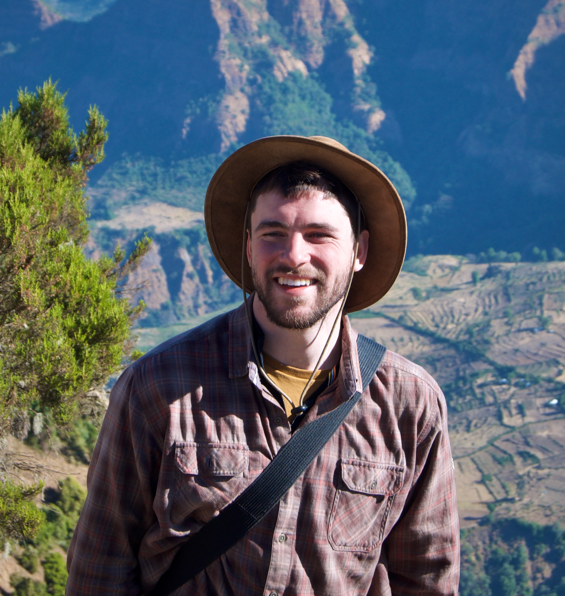

Alexander Jacobsen
Evolutionary Biologist and Naturalist
About
I am a doctoral researcher currently working in the Biological Clocks Research Group at the Max Planck Institute for Evolutionary Biology, with a bachelors in Biology from George Mason University and a Masters in Bioinformatics from Boston University. I have a keen interest in the processes that produce and sustain diversity, specifically in the marine midge Clunio marinus. My research spans a variety of organismal levels and research methodologies; from genetics to ecology, behavioral experiments to computational methods, geometric morphometrics to the microbiome! My work is motivated by a burning curiousity to figure out how life on our planet took on it current form, and develop hypotheses to predict how it might change in the future.
